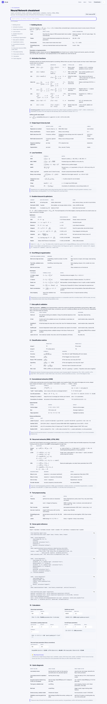
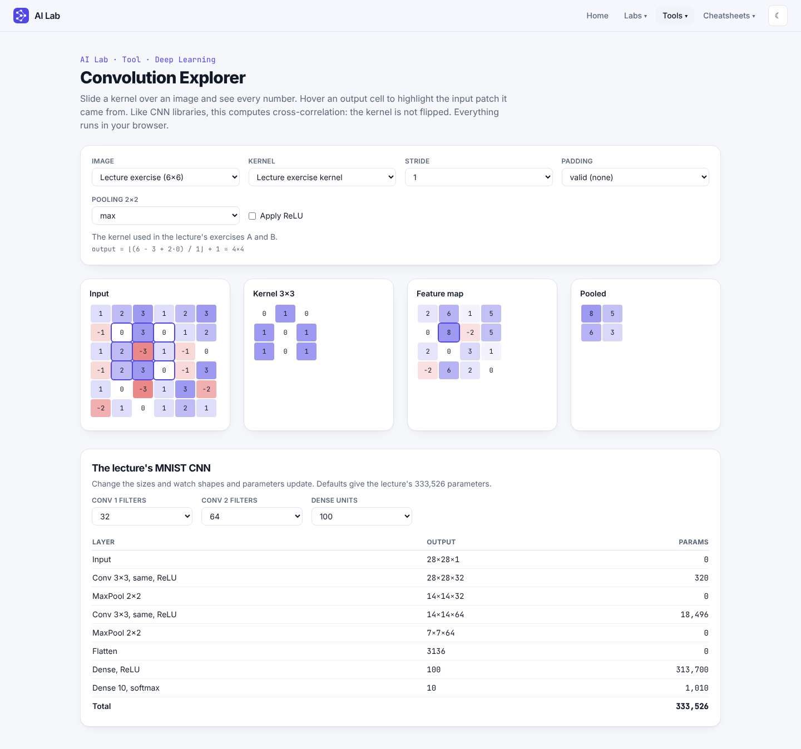
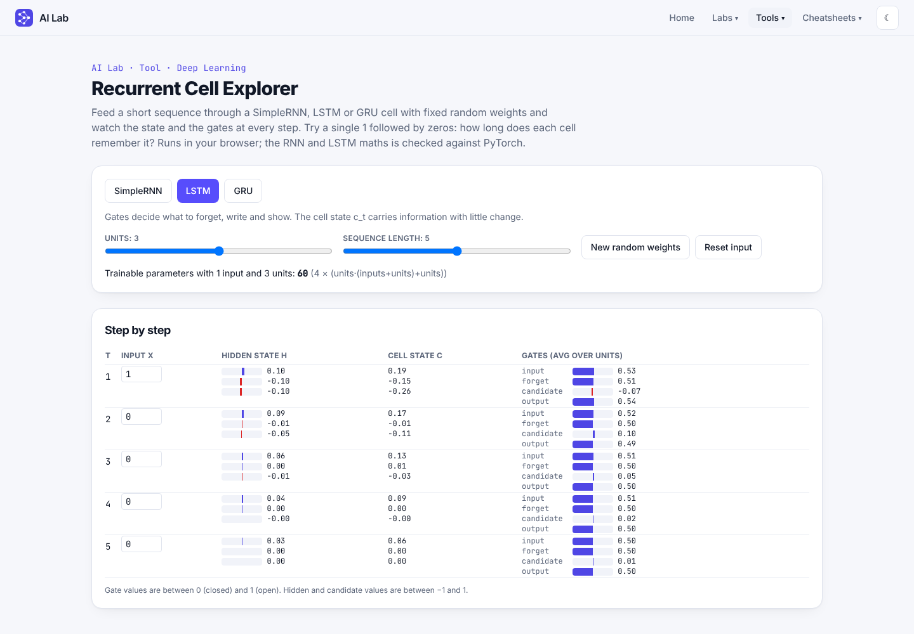

What was built, end to end
AI Lab is a multi-domain platform (Machine Learning · Deep Learning · NLP) of guided labs and interactive tools, each a separate project. It currently ships Lab 1 (data cleaning → neural networks → MNIST, 13 interactive steps), the Neural Network Playground (real NumPy training behind FastAPI, covering the course lectures on activations, losses, optimizers, regularisation, evaluation and validation), a Convolution Explorer, a Recurrent Cell Explorer and a searchable Cheatsheets menu (Neural Network sheet live; ML and NLP planned). Registries make the next lab, tool or cheatsheet a one-file addition.
Requirements checklist
Click an item to see how it was verified.
Honest status
✔ Verified here: backend tests, frontend tests, strict TypeScript build, a 26-step API flow script, and three Playwright suites that drive the real UI (Playground against the real API; Labs platform; Cheatsheets and explorers including phone-width layout).
▲ Not verified: Docker image builds (compose and CloudFormation template only linted/validated), any actual AWS deployment (the session's AWS keys were rejected), screen-reader testing, load behaviour.
✘ Not built: a PyTorch training mode (PyTorch is only used to verify the NumPy maths); WebSocket streaming; auth/rate limiting; labs 2-4 and the ML / NLP cheatsheets (shown as “Planned”); training of CNNs or RNNs (the explorers use fixed weights and real computation, the Playground is a 2-D classifier).
The AI Lab platform
One shell, many projects across domains. Navigation: Home · Labs ▾ · Tools ▾; both menus are grouped by domain.
Domains
ML, DL and NLP in labs/domains.ts. Every lab and tool declares one; add a domain by adding an entry.
Home
Platform hero, Explore by domain tiles with counts, Available now, Coming next.
Labs index
Filter by domain (?domain=ml) and status; per-lab progress with “Start” or “Continue”; empty state with a way out.
Tools index
/tools lists stand-alone apps (the Playground) grouped by domain, with honest empty domains.
Lab shell
Sidebar stepper grouped by topic, lab switcher, progress %, breadcrumbs, previous/next, “mark complete”, mobile drawer.
Progress
Saved per lab in this browser (localStorage); the lab resumes at the last visited step.
Add a new lab (4 steps)
A tool instead of a guided lab: add it to TOOLS in lib/features.ts (with a domain) and add a route.
// frontend/src/labs/lab2/index.ts
export const lab2: Lab = {
id: "lab2", number: 2, domain: "ml", title: "…", subtitle: "…", status: "live", tags: ["…"],
steps: [{ id: "intro", group: "Basics", minutes: 5, title: "…", summary: "…",
Component: lazy(() => import("./steps/Intro")) }],
};
// frontend/src/labs/registry.ts → add lab2 to LABS
Key files
labs/types.ts | Lab and LabStep types |
labs/registry.ts | The list of all labs; menu, index, home and routes derive from it |
labs/progress.ts | Progress hook with safe localStorage access |
labs/ui.tsx | Shared demo primitives: Seg, Slider, Callout, Out, Legend, canvas colours |
pages/LabPage.tsx · pages/LabsIndex.tsx | Shell and index |
Lab 1 · From messy data to a working neural network
Rebuilt from the uploaded Lab1_Visual_Guide.html as 13 React steps. Every demo runs real calculations; the numbers quoted in the text are asserted by unit tests. Pick a step:
Playground architecture
Click a block to see its responsibility.
One training request lifecycle
Backend
- Pure NumPy dense network: vectorised forward/backward, stable BCE from logits, SGD and Adam, seeded initialisers.
- Each experiment is its own
TrainingSession(data split, network, optimizer, RNG, history, lock, worker thread). Pause is anEventchecked before every mini-batch. - Idle sessions are removed after the TTL; creating beyond the cap evicts the least recently used.
| Method | Path | Purpose |
|---|
Frontend (React · TypeScript · Vite · Tailwind)
Routing
/ home · /labs index · /labs/:labId/:stepId lab step · /playground. Lab steps and the Playground are lazy-loaded chunks.
State
usePlayground owns Playground session lifecycle and polling; useLabProgress owns lab progress. Components stay presentational.
Visuals
SVG and Canvas throughout; theme tokens as CSS variables so light/dark apply to every chart; KaTeX for formulas; Recharts for Playground analytics.
Accessibility
Labelled sliders with live output, radiogroups, aria-current="step", status regions, keyboard-closable menu, skip link, reduced motion.
Components
Course coverage: lectures 4–8
Facts were extracted from the five lecture PDFs into docs/notes/lecture-notes.md. Each topic is implemented where it fits and checked against a reference. Filter by topic:
| Lecture topic | Where it lives | Checked against |
|---|
Cheatsheets
A new Cheatsheets menu (grouped by domain) opens /cheatsheets. The Neural Network sheet has 14 sections with formulas, defaults, Keras code and four calculators (parameter counts, conv output size, recurrent parameters, steps per epoch); it is searchable and prints cleanly. Adding a sheet is one file plus one registry line.

Explorers

Kernels, stride, padding, ReLU, pooling, receptive field; lecture exercises A and C reproduced; MNIST CNN totals 333,526 parameters.

SimpleRNN, LSTM, GRU unrolled with every gate shown; RNN and LSTM equal PyTorch outputs.
Screenshots of the working app
Captured by scripts/capture-labs.mjs, scripts/capture-cheatsheets.mjs and scripts/capture-screenshots.mjs driving the real UI. Click to enlarge.
Verification
Browser run: Labs platform (Playwright)
| ✔ | Home headline names ML, DL and NLP and shows three domain tiles; the ML tile opens the ML-filtered Labs page; NLP + Available shows the empty state |
| ✔ | Labs menu grouped by domain; Tools menu and /tools list the Playground; both menus stay inside the viewport at 320, 390, 768, 1024 and 1440 px |
| ✔ | Labs index lists Lab 1 as available and the others as planned; Escape closes the Labs menu |
| ✔ | Lab 1 opens on step 1; “Continue” marks it complete and the tick survives a page reload |
| ✔ | Anomaly lab: Z-score flags 88 and 35, misses 20; IQR still catches 20 |
| ✔ | Imputation shows 165.83; the trainer reaches 100 % accuracy and calls Name 5 female |
| ✔ | MNIST pixel viewer reports pixel values on hover |
| ✔ | No horizontal overflow at 390 px on home, index and three lab steps; no console errors |
Browser run: Cheatsheets and explorers (Playwright)
| ✔ | Cheatsheets menu lists the Neural Network sheet (live) and ML / NLP (planned); the sheet renders 14 sections; searching “lstm” narrows 14 → 3; calculators are present |
| ✔ | Print view hides the search box and keeps all sections |
| ✔ | Convolution Explorer: same padding gives 6×6, hovering a feature-map cell highlights a 9-cell receptive field, CNN total 333,526; Recurrent Explorer shows the GRU parameter count |
| ✔ | No horizontal page scroll and all three nav menus inside the viewport at 320, 375, 768 and 1440 px on six pages; no console errors |
Numerical verification of the extended Playground
| ✔ | Finite-difference gradient checks for every activation, loss, dropout and batch norm; losses, gradients, dropout with identical masks, batch norm and optimizer trajectories compared with PyTorch (196 pytest with torch) |
| ✔ | API flow (26 steps) including evaluation, threshold behaviour, RMSprop + Leaky ReLU + dropout + batch norm + early stopping, and 4-fold cross-validation |
| ✔ | Convolution/pooling exercises equal NumPy results; RNN and LSTM equal PyTorch outputs over a 5-step sequence; GRU matches the lecture formula by hand calculation |
Browser run: Playground (Playwright, real backend)
| ✔ | NumPy network matches PyTorch autograd (see the numerical verification card above); |
| ✔ | Train XOR to epoch 200; pause froze the counter (78 → 78); resume completed; weights differ before vs after; reset returns to epoch 0 |
| ✔ | Preset, Learning Center iteration trace, custom dataset, dark/mobile, backend-down banner |
Automated tests (274)
| Suite | What it proves |
|---|
Run locally
cd backend && python -m venv .venv && source .venv/bin/activate pip install -r requirements-dev.txt uvicorn app.main:app --reload --port 8000 # only the Playground needs this
cd frontend && npm install && npm run dev # http://localhost:5173 (Labs work without the backend)
docker compose up --build # http://localhost:8080 (not built in the authoring env)
Deploy to AWS with the CloudFormation template
infra/aws/nn-playground.yaml creates a security group and one EC2 instance that clones the repo and runs Docker Compose. The stack reports success only after /api/health answers. It passed cfn-lint; it has not been run in AWS.
- CloudFormation → Create stack → upload the template.
- Set
AllowedSshCidr/AllowedAppCidrto your IP/32. - Wait for
CREATE_COMPLETE, open theAppUrloutput. - Delete the stack to remove everything.
Keep the backend a single process: Playground sessions live in memory. The Labs run entirely in the browser, so the front-end alone can also be hosted statically (S3 + CloudFront).
Limitations & next steps
| Item | Status |
|---|